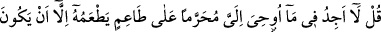
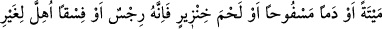
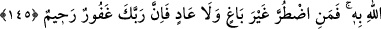

karnında olanlardan herhangi birini haram kıldığı iddiâsını inkâr ve onları reddetmektir.
Çünkü onlar sulbünden on hayvan dünyaya gelen erkek hayvanı kendilerine haram
ederler ve onu hiç bir sudan ve mer’adan menetmezlerdi. “O sırtını korudu.” derlerdi.
Böyle hayvana da “hâm” denirdi.
Yine bir koyun dişi doğurursa o, kedilerine ait olur, erkek doğurursa onu da ilâhları
için ayırırlardı. Şayet koyun bir erkek biri dişi olmak üzere ikiz doğurursa, bu takdirde
dişi yavruyu erkek olanın hükmüne tâbi tutarlardı. Bu koyuna “vasîle” derlerdi.
“Bahira” denilen, kulağı işaretlenmiş deve ile “sâibe” denilen, adak olarak araziye
salıverilmiş deve de onların kendilerine haram kıldıklarındandır. Onlar, bir deve beş
batın yavrular ve bunlardan en sonuncusu erkek olursa, onun kulağını yarar ve serbest
bırakırlar, ona binmezler ve sütünden de faydalanmazlardı. Bu hayvana “bahira”
derlerdi.
Onlardan bir adam hastalandığı vakit: “Eğer iyileşirsem falanca devem adak olsun.”
diye nezrederdi. Bu deveye “sâibe” denirdi. İyileştiği zaman o deve, kendisinden
faydalanma husûsunda kulağı yarılarak işaretlenmiş hayvanların hükmüne tâbi olurdu.
Şayet dişi bahira ve sâibe sağ bir yavru doğururlarsa o yavruyu erkeklere helâl,
kadınlara haram sayarlardı. Şayet yavru ölü doğarsa bu, hem kadınlar hem de erkekler
için helâl sayılırdı. Çocuklar için ise erkek kız ayırımı yapmazlar, hepsi için helâl
sayarlardı.
“Yoksa Allah’ın size böyle vasiyet ettiğinde O’nun huzurunda mıydınız?” Allah,
böyle bir haramı vasiyet ederken siz O’nun yanında hazır ve şâhid miydiniz? Çünkü siz
bir peygambere inanmadığınıza göre böyle şeyleri öğrenmenin sizin gittiğiniz yol ve din
bakımından görüp işitmekten başka usûlü kalmamaktadır.
Sonunun nereye varacağını “bilmeden insanları saptırmak için Allah’a karşı yalan
uydurandan” haram kılmadığını haram kıldı diye O’na nisbet edenden “daha zalim kim
olabilir?”
“Allah,” kim olursa olsun “zalim topluluğu” yakın zamanda ve ilerde durumlarını
düzeltmelerine sebep olacak olan “doğru yola iletmez.”. Böylelikle zalimden hidayet
tamâmen kaldırıldığına göre, daha zalim olanın durumunu var sen düşün.
145. De ki: Bana vahyolunanda, leş veya akıtılmış kan yahut domuz eti -ki pisliğin
kendisidir- ya da günah işlenerek Allah’tan başkası adına kesilmiş bir hayvandan
başka, yiyecek kimseye haram kılınmış birşey bulamıyorum. Başkasına zarar